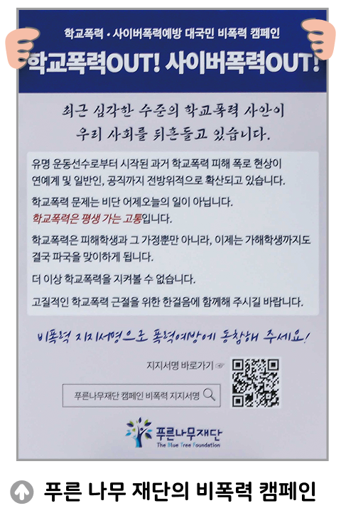

자료 읽기학교 폭력이 없어지는 그날까지

청소년의 학교 폭력 예방을 위해 1995년부터 푸른 나무 재단을 설립하여 운영하고 있는 김 이사장과 한 인기 가수의 남다른 인연이 방송을 통하여 공개되었다. 푸른나무 재단의 김 이사장은 한 방송에 출연하여, 학교 폭력으로 인해 아들이 스스로 세상을 등진 후 푸른 나무 재단을 설립하여 운영하게 된 가슴 아픈 사연을 밝혔다. 아들 사망 당시 국내 최대 대기업 임원으로 재직 중이었던 김 이사장은 “16살 아들이 학교 폭력으로 스스로 삶을 마감하였다. 아들이 죽었을 때 부모의 심정은 말로 표현할 수가 없다. 이 땅에 다시는 비극적인 죽음이 있으면 안 될 것 같아 재단을 설립하였다.”라고 말했다. 한편 김 이사장의 죽은 아들과 친구였던 인기 가수는 학교 폭력으로 가장 친한 친구를 잃은 사연을 소개했다. 그는 오래전 일이지만 지금도 그때의 가슴 아픈 일을 생각하며 학교 폭력 예방의 중요성과 심각성에 대해 이야기했다.
- 『시사매거진』, 2022. 4. 6.
● 학교생활에서 폭력이라고 생각되는 상황이 있었는지 떠올려 보고, 그 까닭을 말해 보자.
친구가 학급 채팅방에서 수업 시간에 졸고 있는 친구 사진을 찍어 올려 아이들이 같이 웃었다. 사진을 올린 친구는 단지 장난이라고 말했지만 사진을 찍힌 친구는 창피해했다.